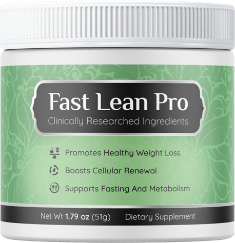

Fast Lean Pro
Product profile · Marketplace data 2026-10-09 · Sales-page research 2026-10-09 · Categories: Food Supplements

Marketplace record
| Product type | Supplements - for slimming |
|---|---|
| Price | $176.74 (Single payment) |
| Affiliate commission | 65% |
| Refund window | Per the vendor's sales page — check the official page before buying |
| Vendor | FastLeanPro (listed since 2023-09-26) |
| Marketplace stats* | Cart conversion — · cancel rate — · affiliate earnings/sale $114.88 |
* Vendor-side marketplace statistics reported by Digistore24; they depend on traffic quality and are not a forecast.
Vendor's marketplace description
Fast Lean Pro: The Nobel "Fasting" FormulaThat Works Faster Than Keto VSL written by an A-list copywriter with hundreds of winners 4 intros to choose the right one for you Instant Commission Bump for volume and proven affs
From the vendor's sales page
Page title: Fast Lean Pro - Text Presentation
Meta description: Fast Lean Pro - Text Presentation
Headline
Inside Every Ounce of "Fast Lean Pro" You'll Find:
Order 6 Jars and Get 3 FREE Bonuses!
Every Order Comes With FREE Shipping Too!
Section headlines
- Japanese Scientists Discover "Fasting Switch" That Supports Healthy Weight Loss
- Scientists ask: Can you fast without fasting?
- Jacob Anderson enjoys life to the fullest
- Marjorie Brown loves her body
- Mary Williams has never felt better
- Claim Your Discounted Fast Lean Pro Below While Stocks Last!
- Frequently Asked Questions
- Claim Your Discounted Fast Lean Pro Below While Stocks Last!
Opening copy
According to numerous studies intermittent fasting is the most efficient weight loss method. Unfortunately, not many people can go without food for 5, 8, 12 or even 24 hours at a time.
When you do not eat for hours, a switch is activated telling your body to burn any fat reserves and to destroy old cells that are not functioning properly. This triggers a regeneration process that not only supports weight loss, but also renews every single cell in your body making you look years younger.
Fast Lean Pro is unlike anything you’ve ever tried or experienced in your life before. It’s the only formula that contains 6 powerful natural ingredients that work in perfect synergy to trick your brain into thinking you are fasting and maintain a healthy weight no matter what and when you eat.
Prices mentioned on the page: $55 · $54 · $358 · $158 · $1074 · $294 · $537 · $207 · $15.95
Guarantee language found: “180” — always confirm the current terms on the official page before relying on it.
CTA buttons: “Get Started”
Research method: raw HTML fetch · 2808 words on page · quality: rich · researched 2026-10-09. Full research file (MD) ↗
Where to check it out
Read the vendor's full sales page (current price, guarantee terms and bonuses are listed there):
View official sales page
That link is an affiliate link — if you buy through it we earn a commission from the vendor at no extra cost to you.